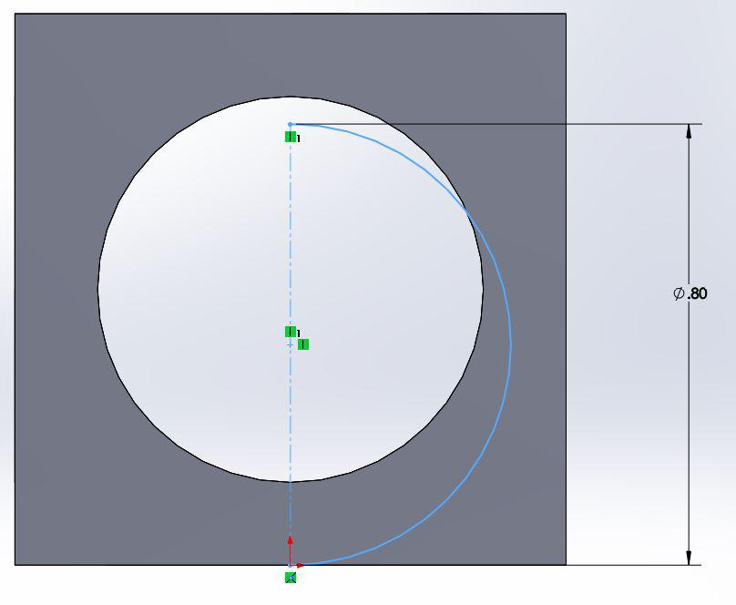
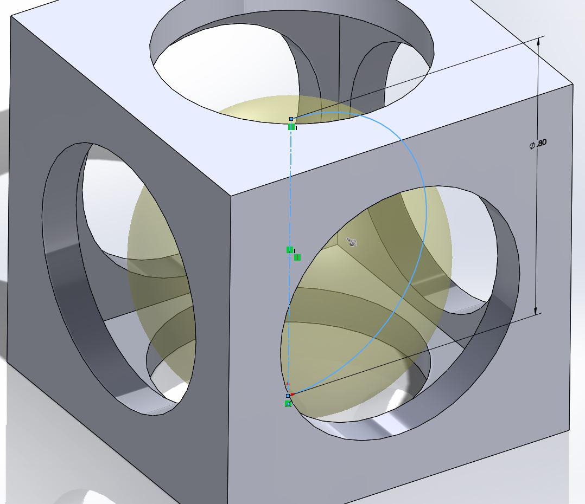

Sketching the Sphere
With the cube finished it is now time to make the sphere and place it inside. We will start by sketching a semicircle on one of the faces. We will do a rotation extrude around the center axis of the semicircle to create our sphere.
With the extrude complete you should have a sphere flush with one of the windows located inside the cube.
Click here for the next step.